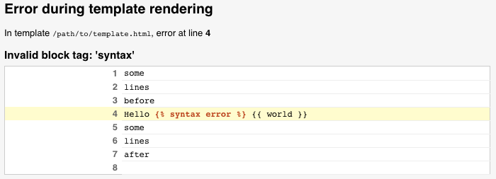

以下是如何实现一个在另一个模板系统中使用的自定义后端。一个模板后端是继承自后端基本类 django.template.backends.base.BaseEngine 。它必须实现 get_template() 和可选实现 from_string() 。以下是一个模拟 foobar 模板库的例子。
from django.template import TemplateDoesNotExist, TemplateSyntaxError
from django.template.backends.base import BaseEngine
from django.template.backends.utils import csrf_input_lazy, csrf_token_lazy
import foobar
class FooBar(BaseEngine):
# Name of the subdirectory containing the templates for this engine
# inside an installed application.
app_dirname = 'foobar'
def __init__(self, params):
params = params.copy()
options = params.pop('OPTIONS').copy()
super().__init__(params)
self.engine = foobar.Engine(**options)
def from_string(self, template_code):
try:
return Template(self.engine.from_string(template_code))
except foobar.TemplateCompilationFailed as exc:
raise TemplateSyntaxError(exc.args)
def get_template(self, template_name):
try:
return Template(self.engine.get_template(template_name))
except foobar.TemplateNotFound as exc:
raise TemplateDoesNotExist(exc.args, backend=self)
except foobar.TemplateCompilationFailed as exc:
raise TemplateSyntaxError(exc.args)
class Template:
def __init__(self, template):
self.template = template
def render(self, context=None, request=None):
if context is None:
context = {}
if request is not None:
context['request'] = request
context['csrf_input'] = csrf_input_lazy(request)
context['csrf_token'] = csrf_token_lazy(request)
return self.template.render(context)
请参阅 DEP 182 以获取更多信息。
当模板有错误时Django调试页面会提供相应的钩子信息。自定义后端引擎能使用这些钩子来细化显示给用户的回溯信息。以下是可用的钩子：
当错误 TemplateDoesNotExist 发生时显示剖析。它会列举出尝试查找指定模板时使用的模板引擎和加载器。举个例子，如果配置了两个Django引擎，剖析显示如下：
当 TemplateDoesNotExist 错误触发时自定义引擎会填写 后端 和 尝试 参数。使用剖析 :ref:` 的后端必须要指定模板对象上的一个来源 1` 。
当模板解析或渲染时发生错误，Django会显示错误所在的行。举个例子：
在解析或渲染异常中配置了 template_debug 属性的自定义引擎会显示这条信息。这个属性是一个有以下值的类 dict：
'name' ：发生异常的模板名称'message': 异常信息。'source_lines': 异常发生的行及其前后内容。这是为了上下文，所以它不应该超过二十行。'line': 异常发生的行数。'before': 发生错误的标识符的错误行前面的内容。'during': 发生错误的标识符。'after': 发生错误的标识符的错误行后面的内容。'total': source_lines 总行数。'top': source_lines 起始行数。'bottom': source_lines 结束的行数。根据上述模板错误， template_debug 会像这样：
{
'name': '/path/to/template.html',
'message': "Invalid block tag: 'syntax'",
'source_lines': [
(1, 'some\n'),
(2, 'lines\n'),
(3, 'before\n'),
(4, 'Hello {% syntax error %} {{ world }}\n'),
(5, 'some\n'),
(6, 'lines\n'),
(7, 'after\n'),
(8, ''),
],
'line': 4,
'before': 'Hello ',
'during': '{% syntax error %}',
'after': ' {{ world }}\n',
'total': 9,
'bottom': 9,
'top': 1,
}
Django有一个可用 template.origin 属性的 Origin 基本对象类。这可以让调试信息显示在 :ref:`template 模板剖析上，同时支持第3方库，例如 `Django Debug Toolbar`_。
自定义引擎可以通过创建有以下特定属性的对象来提供自身的 template.origin 信息。
'name': 模板的完整路径。'template_name': 通过模板加载方法打开的模板的相对路径。'loader_name': 一个可选的以字符串形式指定用来加载模板的文件系统类或函数, e.g. django.template.loaders.filesystem.Loader.12月 07, 2021